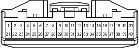

Наименование
Блок управления системой кондиционирования
Код
G25-B
Каталожный номер
90980-12557
Цвет
Белый
Технические характеристики
Жгуты проводов для ремонта

Расположение
Расположение деталей в панели приборов (для моделей с левосторонним рулевым управлением) 1
Расположение деталей в панели приборов (для моделей с правосторонним рулевым управлением) 1
Система
Система кондиционирования
Система зарядки (для моделей с 1GR-FE)
Система зарядки (для моделей с 1KD-FTV)
Вентилятор конденсатора
Холодильная камера
Система круиз-контроля (для моделей с 1GR-FE)
Система круиз-контроля (для моделей с 1KD-FTV)
Индикатор ECT и A/T (для моделей с 1GR-FE)
Индикатор ECT и A/T (для моделей с 1KD-FTV)
Индикатор ECT и A/T (для моделей с 2TR-FE)
Система управления двигателем (для моделей с 1GR-FE)
Система управления двигателем (для моделей с 1KD-FTV)
Система управления двигателем (для моделей с 2TR-FE)
Система управления двигателем (для моделей с 5L-E)
Противообледенитель ветрового стекла
Обогреватели зеркал (для моделей с левосторонним рулевым управлением)
Обогреватели зеркал (для моделей с правосторонним рулевым управлением)
Мультиплексная система передачи данных (CAN, для моделей с левосторонним рулевым управлением)
Мультиплексная система передачи данных (CAN, для моделей с правосторонним рулевым управлением)
Система помощи при парковке (сенсорная система помощи при парковке TOYOTA) (с 8 датчиками, для моделей без системы навигации и многофункционального дисплея)
Обогреватель заднего стекла